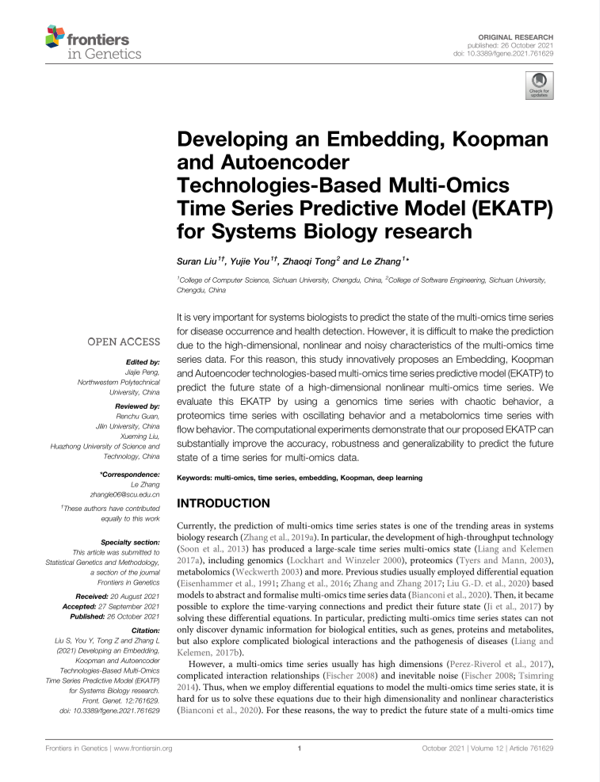

Developing an Embedding, Koopman and Autoencoder Technologies-Based Multi-Omics Time Series Predictive Model (EKATP) for Systems Biology research
Authors: Suran Liu1†, Yujie You1†, Zhaoqi Tong2 and Le Zhang1*

项目简介
本项目创新性地提出了一种基于延时嵌入理论、动力学Koopman理论和自动编码器（AutoEncoder）技术的动力学时间序列预测模型（EKATP）来预测高维非线性动力学时间序列的未来状态。
AutoEncoder是一种支持有效降维数据的神经网络，该神经网络的Encoder模块能够将高维空间数据映射到低维空间，并在Decoder模块将低维度空间数据逆映射回高维空间数据，从而实现数据的空间映射；延时嵌入理论是一种有效的空间转换手段，其将非线性系统重构到嵌入空间中，从而实现空间转换；Koopman算子是一种无穷维度的线性算子，能将有限维度的非线性动力学系统转化为无穷维线性动力学系统。
基于以上三种技术，本项目在AutoEncoder的Encoder模块应用了延时嵌入技术，将高维的非线性时间序列数据映射到低维的线性空间中；并在低维度线性空间中通过Koopman算子实现线性动力学进程，从而得到下一离散时间点的低维线性嵌入状态；最终通过AutoEncoder的Decoder解码器将数据逆映射回到下一离散时间点的高维度真实空间状态，从而实现对高维非线性数据的预测。
在充分训练模型之后，本项目最终得到一个对高维非线性时序数据具有高精度预测性能的神经网络模型，在“Frontiers in Genetics”上发布论文《Developing an Embedding,
Koopman, and Autoencoder technologies-based multi-omics time series predictive model (EKATP) for systems
biology research》；我们还将其应用于EKATP网页应用，面向社会提供官方接口，支持可视化数据预测操作。
项目背景
目前，全中国乃至全世界的时空数据预测研究人员都面临着高维非线性时间序列数据预测精度不足的问题，从而导致了金融风险预测不准确、交通流控系统协调困难、自然气象灾害防控困难等各方面的问题。因此，近年来各领域研究人员一直致力于提高时序数据的预测精度，便于减轻金融风险对经济发展的影响、提高城市交通的流通度、减少气象灾害带来的恶劣影响等。
然而，当前已有的神经网络无法满足各领域对高维非线性的时序数据的高精度预测需求，例如：系统生物学家在经历新型冠状病毒疫情之后发觉，高精度的多组学时序数据预测能显著提高疾病发生预测与健康检测的准确性，然而当前的网络模型并不能支持高精度的多组学时序数据预测。
因此，我们希望研究得到一个能对高维非线性动力学时序数据具有较高预测精度的神经网络模型，从而提高对时间序列数据的预测准确性，进而解决各个前沿领域内的科研难题。
核心技术
Koopman理论
Koopman理论是Koopman在1931年提出的理论，Omri et al.在论文中对Koopman理论做出解释：Koopman理论是基于可以用一个描述标量函数如何在时间域传播的算子可以对非线性动力系统作完全编码的观点。尽管Koopman算子是线性的，有利于简化非线性系统的动力学机制。
延时嵌入理论
对于无限长、无噪声的d'维混沌吸引子的一维标量时间序列，可以在拓扑不变的意义下找到一个d维的嵌入相空间，当维数满足d≥2d'+1时,可以从一维混沌时间序列中重构一个与原动力系统在拓扑意义下相同的相空间，混沌时间序列的判定、分析和预测都是该重构的相空间中进行。
AutoEncoder
Autoencoder是一种多层的神经网络模型，其学习一个输入输出相同的“恒等函数”。Autoencoder由Encoder与Decoder两模块组成。以输入信息为学习目标，通过Encoder对输入信息进行表征学习，获取输入信息的关键信息，从而降维到低维中间层，再经过Decoder解码得到与原数据维度相同的数据，最终通过最小化高维空间的损失函数来训练Autoencoder中Encoder与Decoder的参数。
{#